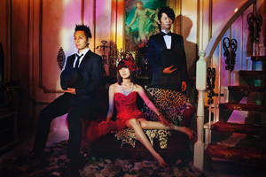

Member
| Vo & Gt 黒木渚 | Follow @KurokiNagisa |
| Ba サトシ | Follow @satoshi_nk |
| Dr 本川賢治 | Follow @sumomomo_motch |
Profile
「黒木渚」という名の4ピースバンド。2010年12月、福岡で結成。
黒木渚から生み出される音楽は、人間のあらゆる側面を暗闇の中でひたすら見つめ続け、闇を拒絶せず、むしろ内包して生きて行くという核に忠実である。
崇高と低俗、汚れとイノセント、相反するものが絶妙なバランスで織り交ざる世界観。全てを征服してしまうような凛とした渚の歌声。その世界を最大限に引き出そうとするエッジの効いた絶妙なバンドアンサンブルが、聴く者の心を貫き震わせる。闇を闇で照らすバンド。
2011年3月16日にファーストシングル「ハツ／ノーリーズン」を発売。さらに、同年10月15日にはセカンドシングル「ハサミ／赤紙」を会場限定で発売（共に自主制作）。 独特の空気感が漂うライブが口コミで広がり、着実に動員力を伸ばし続け、2012年3月19日に、福岡ハートビートで初のワンマンライブ行い、SOLDOUT。 今夏、初の九州全県ツアー2012 其の壱「処女邂逅」を決行。ツアーファイナルは、天神VIVRE HALLにて大盛況の後、幕を閉じた。ワンマン直後、Gtの矢越共平が脱退し、現在はサポートGtを迎えて活動中。
2011年3月16日にファーストシングル「ハツ／ノーリーズン」を発売。さらに、同年10月15日にはセカンドシングル「ハサミ／赤紙」を会場限定で発売（共に自主制作）。 独特の空気感が漂うライブが口コミで広がり、着実に動員力を伸ばし続け、2012年3月19日に、福岡ハートビートで初のワンマンライブ行い、SOLDOUT。 今夏、初の九州全県ツアー2012 其の壱「処女邂逅」を決行。ツアーファイナルは、天神VIVRE HALLにて大盛況の後、幕を閉じた。ワンマン直後、Gtの矢越共平が脱退し、現在はサポートGtを迎えて活動中。